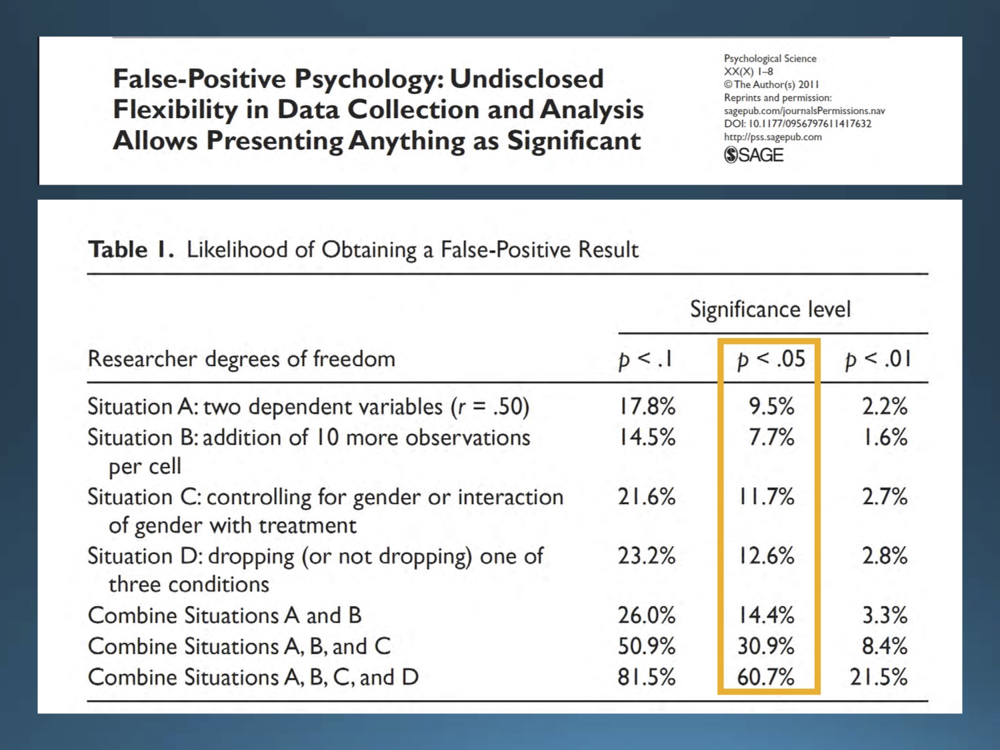
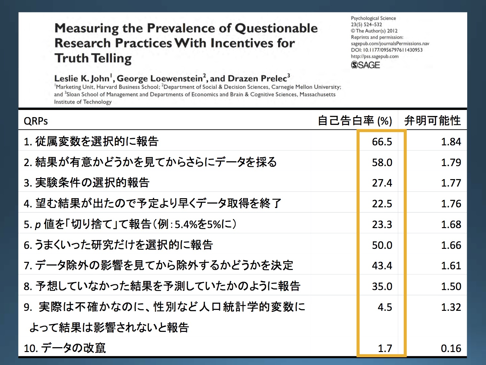

TODA RADIO #002
- ハッシュタグ
#TodaRadioでお願いします（↑のボタンから行けます）。
※ 本ラジオでの発言は個人の見解であり、所属する組織の見解ではありません。
※ 科学的な正しさを重視して発言していますが、発言には誤りが含まれることもありえます。
※ ご意見、苦情などありましたら高橋までメール takahashi.kohske@gmail.com またはツイッター @kohske までご連絡ください。
- 収録日: 2018/01/04
- 場所: SOUL INC.
- メンバー
- コメンテーター: 池田さん
- パーソナリティ: 高橋
ラジオの時系列順にポインタ（前半）
イントロ
- 戸田正直 https://ja.wikipedia.org/wiki/%E6%88%B8%E7%94%B0%E6%AD%A3%E7%9B%B4
- 感情 https://www.amazon.co.jp/dp/4130151592
認知科学会シンポジウム https://kohske.github.io/research/JCSS2017OS/
- Science 2015: http://science.sciencemag.org/content/349/6251/aac4716
- 3つのHigh-impact journalで2008年に出版されたものから対象を選択。
QRPについて
- Simmons (2011) False Positive Psychology: http://journals.sagepub.com/doi/abs/10.1177/0956797611417632
- 心理学評論 池田平石論文 http://team1mile.com/sjpr59-1/contents_original/ikeda_hiraishi2016/
- 追加的ノート https://goo.gl/nK8EXH
- 日本社会心理学会第56回大会WS https://osf.io/g6whz/
- 池田スライド https://osf.io/v78cj/

1個目の表：QRP、その組み合わせによるαのインフレ

2個目の表：QRPに関する調査

3個目の表：仮説が正しい確率によるFDRの変化
ラジオの時系列順にポインタ（後半）
プレレジの話
サンプルサイズ設計
- 統計WEB https://bellcurve.jp/statistics/course/12769.html
- G*Power http://www.gpower.hhu.de/
- PANGEA https://jakewestfall.shinyapps.io/pangea/
- 「心理学のためのサンプルサイズ設計入門」 https://www.amazon.co.jp/gp/product/4061565672/
- モデル化については緑本 https://www.amazon.co.jp/dp/400006973X やSTAN関連など。
- 同等性検定 http://www.igaku-shoin.co.jp/paperDetail.do?id=PA02971_04
- Sequential analysis (wikiでごめんなさい) https://en.wikipedia.org/wiki/Sequential_analysis
- Lakenによるスライド＠OSF https://osf.io/nemgx/
心理的バリア
- OSF https://osf.io/
- AsPredicted https://aspredicted.org/
- 2ちゃんねる https://ja.wikipedia.org/wiki/2%E3%81%A1%E3%82%83%E3%82%93%E3%81%AD%E3%82%8B
- プレレジ精神的にいいよという話 https://rolfzwaan.blogspot.jp/2017/12/my-cattle.html
- “After a while preregistration becomes second nature and it becomes odd not to do it.”
- 理論心理学会 http://www.pat.hi-ho.ne.jp/theo-psy/
- ISTP 2017 ＠立教 https://www2.rikkyo.ac.jp/web/istp2017/index.html
制度的バリア
- ごまめの歯ぎしり https://www.taro.org/category/blog
高橋Q
- 両側検定と片側検定
- 「ア」がいいです。
- イラスト屋「心理学」 http://www.irasutoya.com/search?q=%E5%BF%83%E7%90%86%E5%AD%A6
- ア・バオア・クー https://ja.wikipedia.org/wiki/%E3%82%A2%E3%83%BB%E3%83%90%E3%82%AA%E3%82%A2%E3%83%BB%E3%82%AF%E3%83%BC
- 阿Q正伝 https://ja.wikipedia.org/wiki/%E9%98%BFQ%E6%AD%A3%E4%BC%9D
- 犬山会議 https://langint.pri.kyoto-u.ac.jp/langint/news/icbm/index.html
- ミウラジオ 三浦先生講演会＠中京大学「SNSから社会の心を読む：「ビッグデータ」の心理学」: https://www.chukyo-u.ac.jp/event/2017/12/012244.html